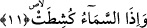
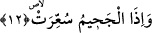

nasıl kitapmış! Küçük büyük hiçbir şey bırakmaksızın (yaptıklarımızın) hepsini
sayıp dökmüş” (Kehf 18/49) der.
Bir hadis-i şerifte Peygamberimiz (s.a.) “İnsanlar yalınayak, çırılçıplak olarak
haşredilirler” deyince Efendimiz’in eşi Ümmü Seleme “Peki kadınlar ne olacak?” diye
sorar. Bunun üzerine Peygamber Efendimiz (s.a.); “Ey Ümmü Seleme! Meşguliyetleri
kadınlardaki herşeyi unutturur” buyurur. Bu ifâde karşısında Ümmü Seleme;
“Meşguliyetleri nedir?” deyince Peygamberimiz (s.a.): “Defterlerin açılmasıdır.
Orada zerre kadar da olsa, hardal tanesi kadar da olsa herşey yazılıdır” buyurur.[31]
Bazı âlimlere göre bu âyetteki “defterlerin açılması”ndan maksad; bunların
sâhiplerine dağıtılmasıdır.
Mersed b. Vadîa’nın şöyle dediği rivâyet edilir: Kıyamet günü gelince sayfalar arşın
altında uçuşur. Cennet-i a’lâda olacağına dâir müminin amel defteri eline gelir.
Cehennemde olacağına dâir defteri ise kâfirin eline gelir. Yani bu defterlerde cennetlik
ve cehennemlik olacaklar yazılıdır. Bunlar amel defterlerinden başkadır.
Bu âyet-i kerimede; içinde amellerin hey’etlerinin bulunduğu nefislerin ve kuvvetlerin
sahifelerine işâret vardır. Bu defterler kişi ölünce ve ruh güneşi dürülünce dürülür ve
bu defterler ruh bedene iâde edilip dirilme gerçekleştiğinde açılır.
11. Gökyüzü sıyrılıp alındığında,
Gökyüzü kökünden sökülüp gerisinde bulunan nesneler ortaya çıkacak şekilde
alındığında. Gökyüzünün arkasında Cennet ve arş vardır.
Gökyüzünün sıyrılıp alınması boğazlanmış ve kesilmiş hayvanın üzerinden derisinin
soyulup alınması veya herhangi bir şeyi örten örtünün o nesnenin üzerinden çekilip
alınması gibi olacaktır.
Rağıb Isfahânî’nin açıklamasına göre; göğün soyulup alınması, boğazlanmış devenin
üzerinden derisinin soyulup alınması gibi olacaktır. Âyette yer alan “küşitat” fiili,
istiâre sanatı ile herhangi bir kimseden korkunun geçip gitmesi durumunu ifâde eder ki
bu, “inkeşeta rav’uhu/korkusu sıyrılıp gitti” ibaresinden alınmıştır.
Bu âyette eşbah arzından ervahın semasının soyulup alınacağına ve esma ve sıfatın
bâtın ve hafâya dürüleceğine işâret vardır.
12. Cehennem tutuşturulduğunda,